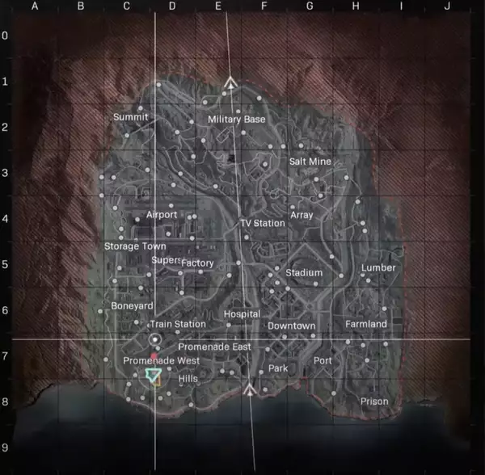
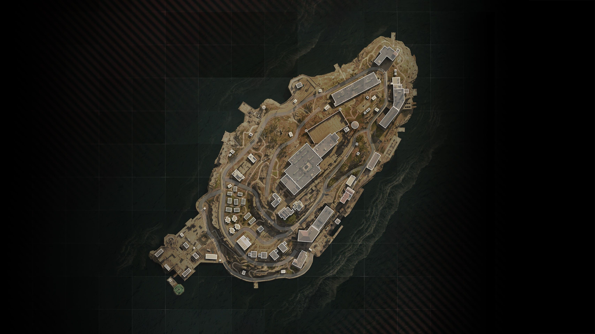

| Home | Guns/Loadout | Maps | Advice |
|
Here you will find where to drop in a warzone/rebirth game also these pictures below will tell you where everthing could spawn and where not to drop |
|
So here is the main map called verdistank the best drop zones are Summit,factory and superstore. Also if you know what your doing land first drop. |
So now we have a diffrent map called Rebith island here its a games with 40 squads witch means about 160 people. so you want to drop at Bioweapons then go to decon zone and play it safe or land at security and get a loadout which you can do for either, |
|  |  |
|
HI |